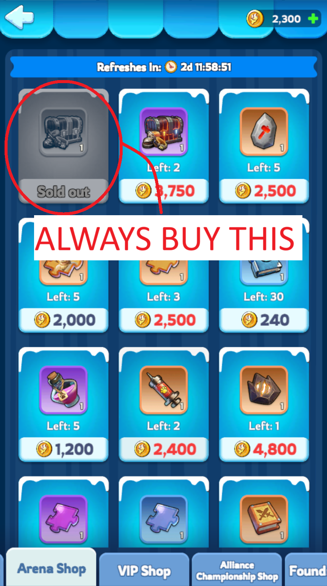

📖 Quick Summary
If you don't want to read everything and just want to know what to do quickly:
- Focus on 3 sets only, one of each troop type
- Can have 2 additional sets for arena, but far less upgraded than first 3
- Priority in the 3 sets: Infantry health > Marksman lethality > Lancer lethality >> Marksman health > Infantry lethality > Lancer health
- Boots & goggles for lethality, belt & gloves for health
Priority and Focus
You only really want to focus on 3 sets of gear, one for each type of troops. With 4 pieces per set, that makes it 12 pieces of gear to focus on.
In those 3 sets, here's the priority by order of importance:
🎯 Highest Priority
📉 Lower Priority
Enhancement Level (Component XP)
The first 3 priorities (so the first 6 pieces) should be much higher than the next 3 priorities. Around twice the level, to give you an idea. There isn't necessarily an exact method of upgrading, but I would suggest having about 5 to 10 levels of difference between priorities, with a much bigger difference between the third priority and the fourth.
Mastery Level (Essence Stones)
I would suggest getting the first 3 priorities to level 4-5, and the next 3 to level 1-2. Once you reach that point, you can start pouring your essence stones in one specific piece of gear to get it to become red +20 (you unlock the red gear at mastery level 10 and enhancement level 100).
Here's the order of those pieces, you want to get the first one to red +20 before moving on to the next one:
- Infantry gloves
- Marksman goggles
- Lancer goggles
Secondary Sets
As I said, you only really want to focus on 3 primary sets. However, in arena and exploration, you have 5 heroes. Therefore, it can be good to have two additional sets of gear for those 2 additional heroes you will use in arena, but they should be of much lower quality than the first 3. I personally do not put any essence stones in those sets and only have them at level 20-25 in component XP.
How to Fix Your Gear
If your gear doesn't correspond to what I have described, do not panic! It can be fixed (granted you don't have any red pieces of gear, because those cannot be reverted back).
How to do so:
- First, unequip all the gear on all your heroes. That will also give you an idea of who your strongest hero in each category is.
- Then, click on them and click equip. It will automatically pick the best gear for them among what you have. Do so for the strongest hero of each type (3 heroes).
- Reforge all the other pieces of gear that aren't equipped. Go in your backpack, click on the piece of gear, then on the reforge icon at the bottom right. Make sure it's "enhancement reforge", this will give you back 100% of the XP used as XP components.
- Once you've done that for all your unequipped gear, equip the two additional heroes you will use in arena. It will pick the rarest pieces of gear first.
- You can then use all the XP components you got on your main 3 sets following the priority as explained above and put 20-25 levels in your 2 additional sets as well (or a little more or less depending on your preferences and if you focus on arena or not).
Note: I would only use the mastery reforge for any pieces of gear outside of your top 5 sets, as it only gives back half of the essence stones.
Explanations
This might be a little long winded so feel free to skip this part, but if you are interested or need a good reason why upgrade your gear in the way presented before, here it is.
Why 3 Sets?
The idea is you want to have the strongest march as possible. A march needs 3 heroes, one of each type. Therefore you only really need to have gear for those 3 heroes. Since you can unequip and reequip hero gear very easily, each time you get a new strongest hero for a specific troop type, simply unequip your set on the old hero and equip it on the new one.
Why do you want the strongest march possible? When you start a rally or are the captain in a garrison, your hero gear will count. But not when you join a rally or aren't the captain of a garrison, in that case, only the first expedition skill (top right skill) of your first hero will count, but nothing else. That's why it's not important to have gear on your bear heroes or on Patrick or Sergey (if Sergey isn't your strongest infantry hero that is) and only on your 3 best heroes you use to start a rally (against the bear, a player, a turret, the castle, a polar terror,...).
Having a really strong march will also be very useful for many purposes, for the labyrinth (Land of the brave and Gaia heart), for mercenaries, for PvP (during BIA or SvS for example), for frostfire mines if you want to occupy the center or kick someone from a mine, for the Alliance Championship, etc...
Why That Specific Priority?
If you click on a piece of gear, it will give you a breakdown of the stats this piece gives. You will notice for boots and goggles it gives lethality, and for belts and gloves it gives health.
Since most optimal ratios use mostly infantry, it is the most important troop type. They will be the one to tank the damage and if they die you will quickly lose the fight. Infantry health is therefore the most important stat of all and why belts and gloves on infantry are the first priority (and getting the gloves to red +20 gives an additional bonus of +20% infantry defense).
Next up is marksmen, they deal the most damage of all troop types and are the second most important (you can notice that in the ratio 50-20-30 that's usually recommended), and for dealing damage, you want lethality. Finally lancers, they're less important than the first two but shouldn't be neglected either, as they also deal a lot of damage, hence why you also want lethality on them.
That's the reason behind the first 3 priorities and why they should be improved a lot more than the following 3.
For the next 3 priorities, you want your marksmen to have some health too as they are vulnerable (you can notice if you have a garrison that when you get attacked, you'll get a majority of infantry in your infirmary but marksmen too, even before lancers). With the fighting mechanics, some lancers can get to the marksmen in the backline and kill them. Then, having your infantry deal a bit more damage is good too but not as important, and getting more health on lancers is the least important of all 6 priorities.
Why Two Additional Sets?
Those will be for arena and exploration, as you need 5 heroes. The first enhancement levels are very cheap and thus worth getting to get you stronger there. But again, I wouldn't invest too much as you really want to focus on your first 3 sets and your main march.
Additional Tips
💎 Getting Mythic Gear
To get mythic gear (gold pieces of gear), you need to buy the custom mythic hero gear chest for 12k coins in the arena shop every chance you get (and buy nothing else from that shop, unless you're performing really well in arena and can afford to buy more than that chest every week). It is highly recommended to keep buying it even after your 5 sets are all mythic because to upgrade your gear to red, you will need to spend mythic gear pieces.
For the same reason, it is also important to buy the mithril for 2.5k glowstones in the labyrinth shop every week. You might not have any use for it now, but trust me once you reach red gear you will be very happy to have bought it, as it is really hard to get by and you will need a lot of it.
🔄 Hero Switching
If you don't have Alonso, and are using Gina in arena (I wouldn't recommend using Bahiti there as he's not as good), you will most likely need to switch your best marksmen gear between her and Bahiti. Switch it to Bahiti every time you do bear, sign up for alliance championship or do Gaia heart and Land of the brave in the labyrinth, otherwise just leave it on Gina to be as strong as possible in arena.
📸 Reference Images
📋 Quick Summary
- Focus on 3 sets only, one of each troop type
- Can have 2 additional sets for arena, but far less upgraded than first 3
- Priority in the 3 sets: Infantry health > Marksman lethality > Lancer lethality >> Marksman health > Infantry lethality > Lancer health
- Boots & goggles for lethality, belt & gloves for health